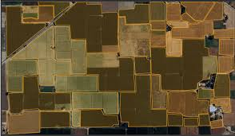

Crop Type Identification from Satellite Imagery in Western Cape, South Africa

This dataset and AI model was produced as part of the Radiant Earth Spot the Crop Challenge (https://zindi.africa/hackathons/radiant-earth-spot-the-crop-hackathon). The objective of the competition was to create a machine learning model to classify fields by crop type from images collected during the growing season by the Sentinel-2 and Sentinel-1 satellites.
Data characteristics
The dataset contains a time-series of satellite imagery and labels for crop type that have been collected through aerial and ground survey. Labels are derived from the survey conducted by the Western Cape Department of Agriculture. Satellite data including multispectral Sentinel-2 are then matched with corresponding labels.
Model characteristics
This repository contains the winning models from the Zindi data competition "Spot the Crop" in which participants used time series of Sentinel-2 multispectral imagery as input for crop type classification.
How to use
The agricultural sector makes a substantial contribution to GDP and livelihoods across the developing world. However, regular and reliable agricultural data remains difficult and expensive to collect on the ground. As a result, policy-makers usually don’t have access to updated data for implementing policies or supporting farmers. Earth observation satellites provide a wealth of multispectral image data that can be used for developing agricultural monitoring tools. These tools support farmers and policy-makers across Africa and the developing world. With this dataset and AI model you can use time-series of Sentinel-2 multi-spectral data to classify crops in the Western Cape of South Africa.
Datasets
Use cases
Additional resources
About
Powered by / Provided by: Radiant Earth, Western Cape Department of Agriculture
Catalyzed by: FAIR Forward - AI for All, GIZ
Financed by: BMZ
Authors: Philipp Olbrich
Contact: Radiant Earth (ml@radiant.earth)